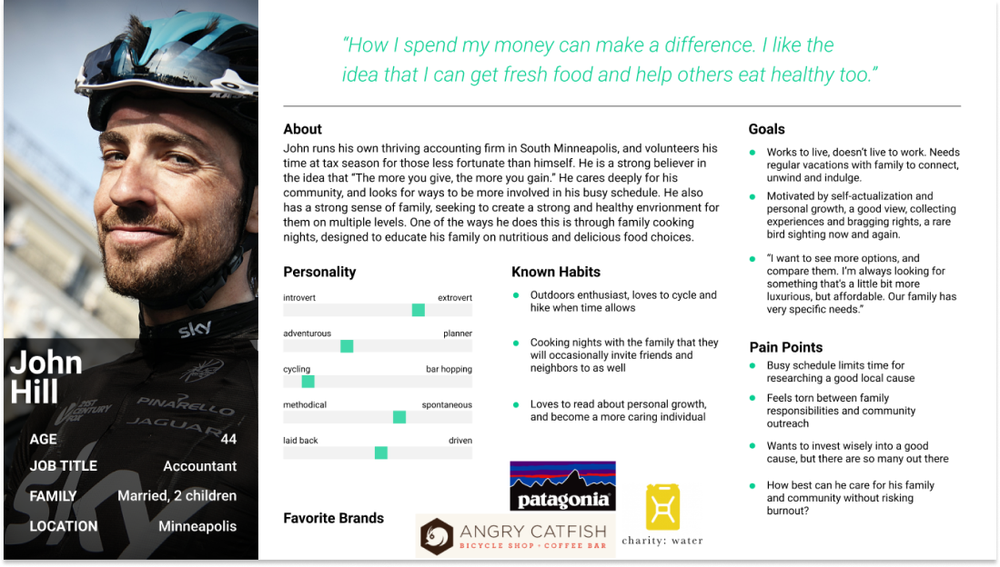
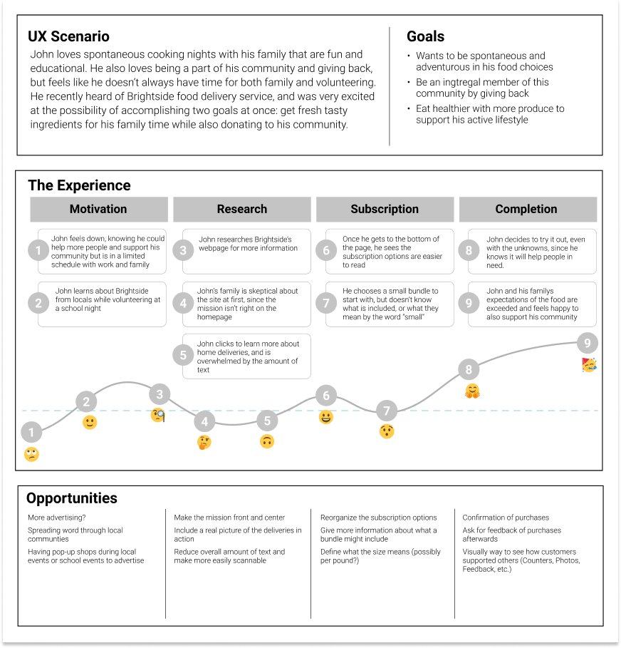
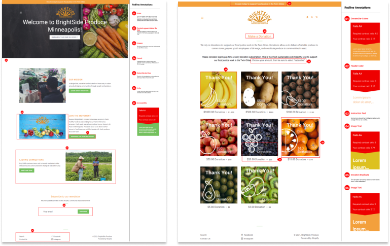
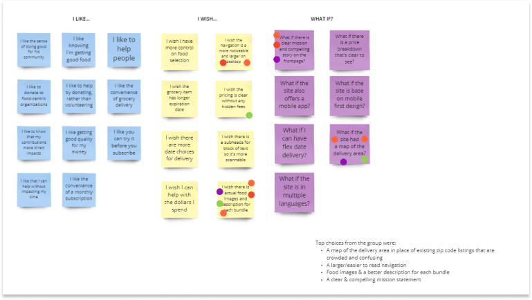
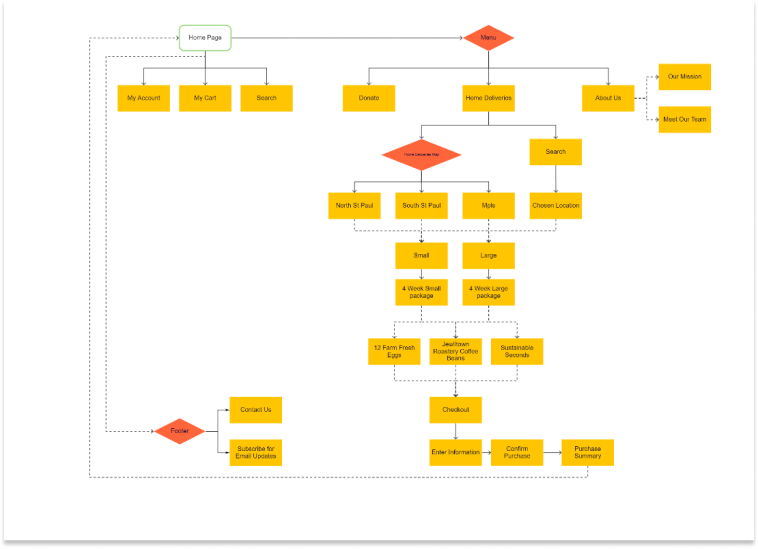
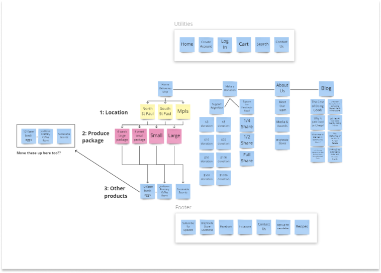
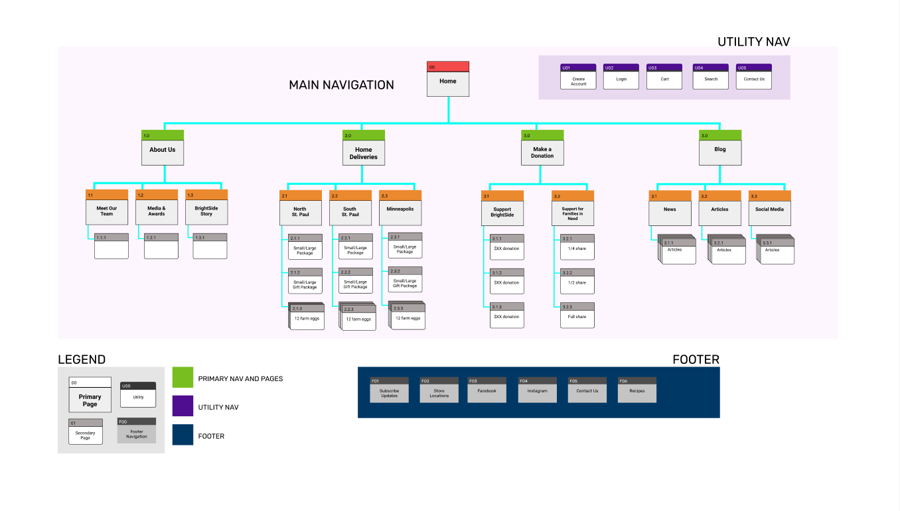

1. Research Phase
We created an initial research plan, which outlined our project background, timeline, research questions, and user interview.
After conducting user interviews, we added a user testing component to gain insight into the current page design and drafting a testing plan.
Research Plan
User Testing Plan
1a. The Problem
Initial Observations
We observed that site visitors find BrightSide’s website too text-heavy. It was also difficult for new visitors to find the mission and information about signing up for deliveries.
Unclear Delivery Page
The overall impression from our site visitors of this page was that the zip code listings and color coding were confusing. We also received feedback about the “large” and “small” categories for the bundle sizes indicating that they were ambiguous.
The Problem
How might we improve Brightside Produce’s website so that site guests are able to successfully understand the mission and navigate the site?
1b. Interviews
User Interviews
We conducted interviews with five different users to get insight into their current grocery shopping habits and relationship with nonprofits. We used our interview questions to draft a survey in Google Forms which we distributed via social media. The survey returned 39 responses.
Q - If you were going to think about online shopping what would you most likely enjoy about it?
A - “The convenience of it, it would be easy and fast to get food delivered”
1c. User Persona

1d. User Journey Map

2. Definition & Ideation
Heuristics, Ideation, User Flow, Site Map
2a. Initial Observations

We conducted a heuristic analysis of 8 different pages:
Text did not meet accessibility standards.
Icons difficult to spot due to background images.
Site lacked a consistent design from page to page.
Large blocks of small text made the site difficult to scan and digest.
2b. Ideation

Using the feedback from initial user tests, interview responses, and survey results, we brainstormed focus points for our redesign, which included:
Easier-to-use and clearer. subscription page
More intuitive navigation
Highlighting BrightSide’s mission and impact.
2c. User Flow


2d. Sitemap
